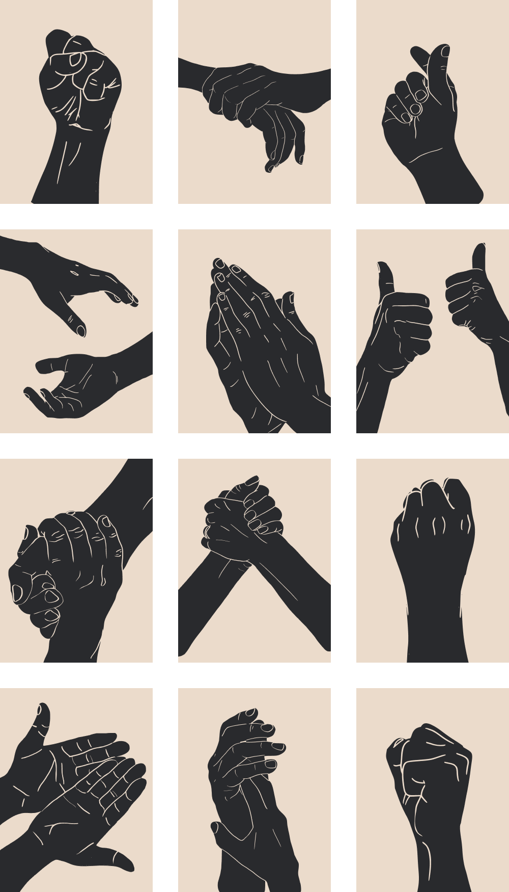
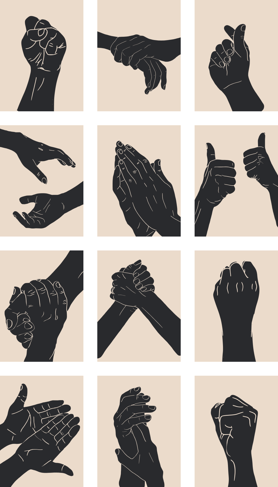
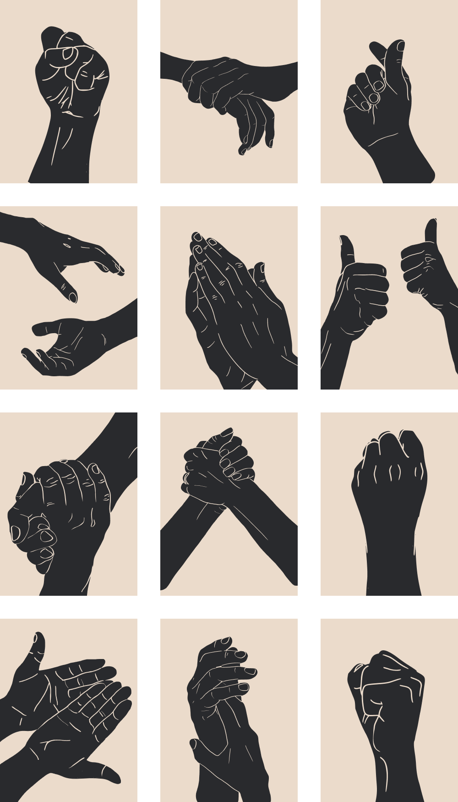
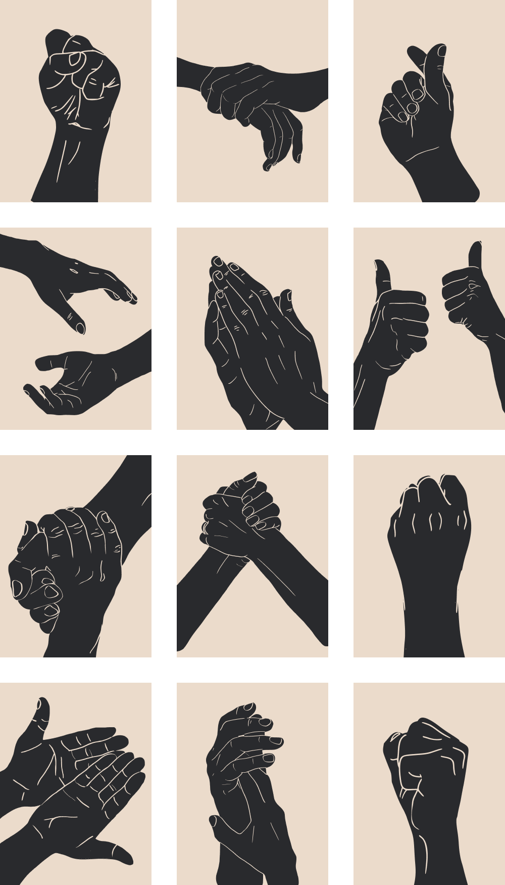

HarvardxDesign is an annual conference launched in 2012 organized by student organizations at Harvard Graduate School of Design and Harvard Business School. We bring together creative thinkers, design luminaries, professors, industry leaders, and students to engage, debate, and reinterpret design across scales and sectors.
Designers have always used their hands to craft and imagine new worlds. While the instabilities and inequities in our society have been exposed over this past year, design can be used to build, leverage, and confront power structures at various scales. This year's theme explores Power by Design as represented by hands and the many forms they take, from vessels of control to symbols of solidarity, to provoke discussions about the power held by designers as agents of change.

The rigidity and volatility of varying societal systems often influence the role of designers in their institutional or personal environments. In what capacity do designers provoke or respond to change in our societies?

A designer is always navigating relationships with other fields, persons, or systems, often with conflicting priorities. How can teams be structured internally to ensure the successful outcome of any given project?
The implications and consequences of design may not align with intentions of a given work. What are the ethical responsibilities of designers, and how do we gauge limitations versus opportunities when considering the ethics behind design decisions.

Special thanks to Sheng-Hung Lee (MIT).
Website and branding by Jenny Fan.